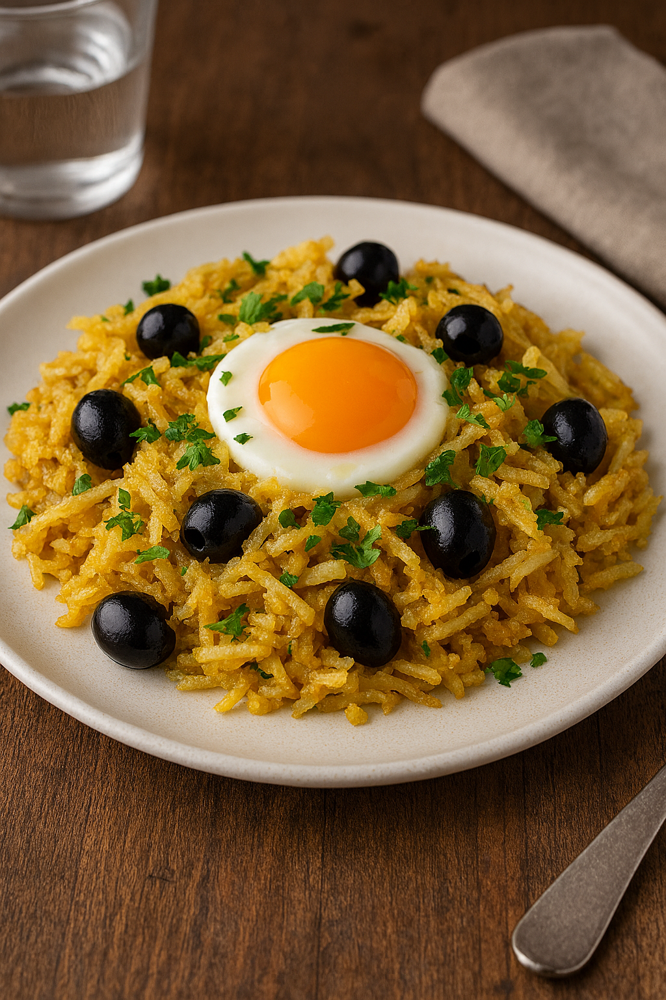

Bacalhau à Brás is a traditional Portuguese dish made with shredded salted cod, onions, and thinly sliced fried potatoes, all bound together with scrambled eggs. It is typically garnished with black olives and parsley, offering a rich and comforting flavor profile.
